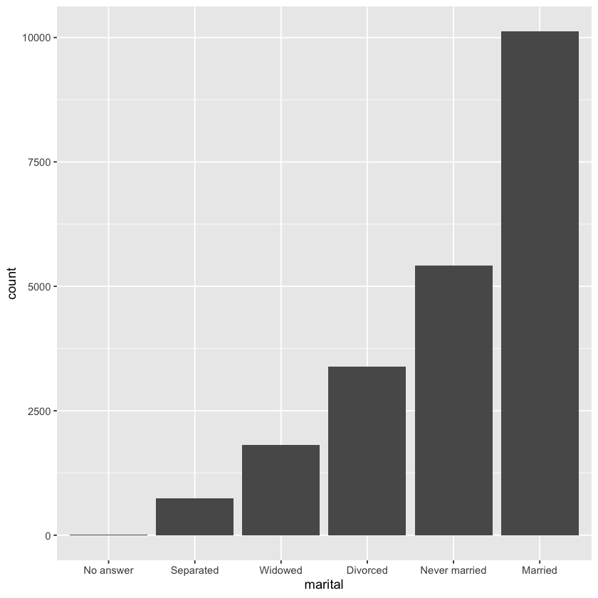

library('tidyverse')factor
factor in ggplot, factor in tibble(fct_record, fct_collapse)
팩터형이란?
- 팩터형은 범주형 변수에 사용되는데, 범주형 변수란 가질 수 있는 값이 미리 고정되고 또 알려진 변수를 말한다.
팩터형은 문자형 벡터를 알파벳순이 아닌 순서로 표시하고 싶을 때도 이용할 수 있다.
팩터형이 문자형보다 다루기 쉽기에, 베이스 R의 함수들은 문자형을 자동으로 팩터형으로 변환한다.
다시 말해 팩터형이 사실 도움이 되지 않는 경우에도 나타나는 경우가 많이 있다는 의미다.
- 월을 기록한 변수 예시
x1 <- c("Dec", "Apr", "Jan", "Mar")x1- 'Dec'
- 'Apr'
- 'Jan'
- 'Mar'
- 문자형의 경우 오타를 입력했거나 정렬을 하고자 할 때 유용한 순서로 정렬이 되지 않는다.
sort(x1)- 'Apr'
- 'Dec'
- 'Jan'
- 'Mar'
- 팩터형을 만들기 위해서는 먼저 선례(?)를 만들어 주어야 한다.
month_levels <- c(
"Jan", "Feb", "Mar", "Apr", "May", "Jun",
"Jul", "Aug", "Sep", "Oct", "Nov", "Dec"
)month_levels- 'Jan'
- 'Feb'
- 'Mar'
- 'Apr'
- 'May'
- 'Jun'
- 'Jul'
- 'Aug'
- 'Sep'
- 'Oct'
- 'Nov'
- 'Dec'
y1 <- factor(x1, levels = month_levels)y1- Dec
- Apr
- Jan
- Mar
Levels:
- 'Jan'
- 'Feb'
- 'Mar'
- 'Apr'
- 'May'
- 'Jun'
- 'Jul'
- 'Aug'
- 'Sep'
- 'Oct'
- 'Nov'
- 'Dec'
- 선례를 바탕으로 정렬
sort(y1)- Jan
- Mar
- Apr
- Dec
Levels:
- 'Jan'
- 'Feb'
- 'Mar'
- 'Apr'
- 'May'
- 'Jun'
- 'Jul'
- 'Aug'
- 'Sep'
- 'Oct'
- 'Nov'
- 'Dec'
- 오타가 추가된 예시
x2 <- c("Dec", "Apr", "Jam", "Mar")y2 <- factor(x2, levels = month_levels)- 레벨 집합(선례)에 포함되지 않는 값은 NA로 변환된다.
y2- Dec
- Apr
- <NA>
- Mar
Levels:
- 'Jan'
- 'Feb'
- 'Mar'
- 'Apr'
- 'May'
- 'Jun'
- 'Jul'
- 'Aug'
- 'Sep'
- 'Oct'
- 'Nov'
- 'Dec'
parse_factor사용하면 NA가 나올시 warning뜬다.
y2 <- parse_factor(x2, levels = month_levels)Warning message:
“1 parsing failure.
row col expected actual
3 -- value in level set Jam
”- levels입력안하면 그냥 알파벳 순서로 나열
factor(x1)- Dec
- Apr
- Jan
- Mar
Levels:
- 'Apr'
- 'Dec'
- 'Jan'
- 'Mar'
factor in ggplot
- 설문조사 샘플 데이터
gss_cat %>% head| year | marital | age | race | rincome | partyid | relig | denom | tvhours |
|---|---|---|---|---|---|---|---|---|
| <int> | <fct> | <int> | <fct> | <fct> | <fct> | <fct> | <fct> | <int> |
| 2000 | Never married | 26 | White | $8000 to 9999 | Ind,near rep | Protestant | Southern baptist | 12 |
| 2000 | Divorced | 48 | White | $8000 to 9999 | Not str republican | Protestant | Baptist-dk which | NA |
| 2000 | Widowed | 67 | White | Not applicable | Independent | Protestant | No denomination | 2 |
| 2000 | Never married | 39 | White | Not applicable | Ind,near rep | Orthodox-christian | Not applicable | 4 |
| 2000 | Divorced | 25 | White | Not applicable | Not str democrat | None | Not applicable | 1 |
| 2000 | Married | 25 | White | $20000 - 24999 | Strong democrat | Protestant | Southern baptist | NA |
팩터형이 티블로 저장되면 해당하는 레벨들을 쉽게 볼 수 없는데 볼 수 있는 방법1)은 count이다.
gss_cat %>%
count(race)| race | n |
|---|---|
| <fct> | <int> |
| Other | 1959 |
| Black | 3129 |
| White | 16395 |
방법2) 막대 그래프
ggplot(gss_cat, aes(race)) + geom_bar()scale_x_discrete(drop = FALSE) : ggplot에서 값이 없는 레벨을 보이게하기
ggplot(gss_cat, aes(race)) +
geom_bar() +
scale_x_discrete(drop = FALSE)유효하지만 이 데이터 셋에서 나타나지 않는 값을 나타냄
- 종교에 따른 하루 TV 시청시간의 평균
relig_summary <- gss_cat %>%
group_by(relig) %>%
summarize(
age = mean(age, na.rm = TRUE),
tvhours = mean(tvhours, na.rm = TRUE),
n = n()
)
ggplot(relig_summary, aes(tvhours, relig)) + geom_point()- tvhours순위로 religion순위 재 정렬
ggplot(relig_summary, aes(tvhours, fct_reorder(relig, tvhours))) + geom_point()- tibble자체를 순서 정렬시키고 그리는 방법
relig_summary %>%
mutate(relig = fct_reorder(relig, tvhours)) %>%
ggplot(aes(tvhours, relig)) +
geom_point()- 보고서 소득 레벨에 따라 평균나이가 어떻게 변화하는지 보여주는 plot
rincome_summary <- gss_cat %>%
group_by(rincome) %>%
summarize(
age = mean(age, na.rm = TRUE),
tvhours = mean(tvhours, na.rm = TRUE),
n = n()
)rincome_summary| rincome | age | tvhours | n |
|---|---|---|---|
| <fct> | <dbl> | <dbl> | <int> |
| No answer | 45.45029 | 2.904762 | 183 |
| Don't know | 45.60902 | 3.411290 | 267 |
| Refused | 47.61082 | 2.481973 | 975 |
| $25000 or more | 44.21217 | 2.234208 | 7363 |
| $20000 - 24999 | 41.53365 | 2.784753 | 1283 |
| $15000 - 19999 | 39.96180 | 2.912245 | 1048 |
| $10000 - 14999 | 41.11301 | 3.016541 | 1168 |
| $8000 to 9999 | 41.08235 | 3.148571 | 340 |
| $7000 to 7999 | 38.24468 | 2.645455 | 188 |
| $6000 to 6999 | 40.29907 | 3.174312 | 215 |
| $5000 to 5999 | 37.81057 | 3.163793 | 227 |
| $4000 to 4999 | 38.87500 | 3.145299 | 226 |
| $3000 to 3999 | 37.82182 | 3.312102 | 276 |
| $1000 to 2999 | 34.54430 | 3.004525 | 395 |
| Lt $1000 | 40.51049 | 3.361842 | 286 |
| Not applicable | 56.10628 | 3.791468 | 7043 |
ggplot(rincome_summary, aes(age, fct_reorder(rincome, age))) + geom_point()- 해당없음(Not applicable)을 다른 특별한 레벨들과 함께 앞으로 가져오기
ggplot(rincome_summary, aes(age, fct_relevel(rincome, "Not applicable"))) +
geom_point()by_age <- gss_cat %>%
filter(!is.na(age)) %>%
count(age, marital) %>%
group_by(age) %>%
mutate(prop = n / sum(n))by_age %>% head| age | marital | n | prop |
|---|---|---|---|
| <int> | <fct> | <int> | <dbl> |
| 18 | Never married | 89 | 0.978021978 |
| 18 | Married | 2 | 0.021978022 |
| 19 | Never married | 234 | 0.939759036 |
| 19 | Divorced | 3 | 0.012048193 |
| 19 | Widowed | 1 | 0.004016064 |
| 19 | Married | 11 | 0.044176707 |
ggplot(by_age, aes(age, prop, color = marital)) +
geom_line(na.rm = TRUE)fct_reorder2 : 가장 큰 x값과 연관된 y값으로 팩터형을 재정렬한다.
선 색상은 범례와 정렬되므로 이렇게 하면 plot읽기가 쉬워진다.
ggplot(by_age, aes(age, prop, color = fct_reorder2(marital, age, prop))) +
geom_line() +
labs(color = "marital")fct_infreq : 빈도 오름차순으로 레벨 정렬
gss_cat %>%
mutate(marital = marital %>% fct_infreq() %>% fct_rev()) %>%
ggplot(aes(marital)) +
geom_bar()
tibble속 factor값 수정
gss_cat %>% count(partyid)| partyid | n |
|---|---|
| <fct> | <int> |
| No answer | 154 |
| Don't know | 1 |
| Other party | 393 |
| Strong republican | 2314 |
| Not str republican | 3032 |
| Ind,near rep | 1791 |
| Independent | 4119 |
| Ind,near dem | 2499 |
| Not str democrat | 3690 |
| Strong democrat | 3490 |
fct_recode : 미리 입력한 대로 팩터 값을 바꿔준다(명시적으로 언급하지 않은 것은 그대로 둠)
gss_cat %>%
mutate(partyid = fct_recode(partyid,
"Repubican, strong" = "Strong republican",
"Repubican, weak" = "Not str republican",
"Independent, near rep" = "Ind,near rep",
"Independent, near dem" = "Ind,near dem",
"Democrat, weak" = "Not str democrat",
"Democrat, strong" = "Strong democrat"
)) %>%
count(partyid)| partyid | n |
|---|---|
| <fct> | <int> |
| No answer | 154 |
| Don't know | 1 |
| Other party | 393 |
| Repubican, strong | 2314 |
| Repubican, weak | 3032 |
| Independent, near rep | 1791 |
| Independent | 4119 |
| Independent, near dem | 2499 |
| Democrat, weak | 3690 |
| Democrat, strong | 3490 |
- 나머지(No answer)등을 Other로 묶어서 처리해버리기
gss_cat %>%
mutate(partyid = fct_recode(partyid,
"Repubican, strong" = "Strong republican",
"Repubican, weak" = "Not str republican",
"Independent, near rep" = "Ind,near rep",
"Independent, near dem" = "Ind,near dem",
"Democrat, weak" = "Not str democrat",
"Democrat, strong" = "Strong democrat",
"Other" = "No answer",
"Other" = "Don't know",
"Other" = "Other party"
)) %>%
count(partyid)| partyid | n |
|---|---|
| <fct> | <int> |
| Other | 548 |
| Repubican, strong | 2314 |
| Repubican, weak | 3032 |
| Independent, near rep | 1791 |
| Independent | 4119 |
| Independent, near dem | 2499 |
| Democrat, weak | 3690 |
| Democrat, strong | 3490 |
✖︎ 서로 같지 않은 범주들을 함께 묶는다면 잘못된 결과를 도출할 수 있으므로 신중히 사용해야 한다.
fct_collapse : fct_recode와 비슷한데 다수를 하나로 병합하고자 할 때 더 편함
gss_cat %>%
mutate(partyid = fct_collapse(partyid,
other = c("No answer", "Don't know", "Other party"),
rep = c("Strong republican", "Not str republican"),
ind = c("Ind,near rep", "Independent", "Ind,near dem"),
dem = c("Not str democrat", "Strong democrat")
)) %>%
count(partyid)| partyid | n |
|---|---|
| <fct> | <int> |
| other | 548 |
| rep | 5346 |
| ind | 8409 |
| dem | 7180 |
- 상위 1등과 나머지는 Other로 묶어서 비교하기
gss_cat %>%
mutate(relig = fct_lump(relig)) %>%
count(relig)| relig | n |
|---|---|
| <fct> | <int> |
| Protestant | 10846 |
| Other | 10637 |
- 상위 4등까지만 보고 나머지들은 전부 Other로 묶기
gss_cat %>% mutate(relig = fct_lump(relig, n = 4)) %>%
count(relig, sort = TRUE) %>%
print(n = Inf)# A tibble: 5 × 2
relig n
<fct> <int>
1 Protestant 10846
2 Catholic 5124
3 None 3523
4 Other 1301
5 Christian 689